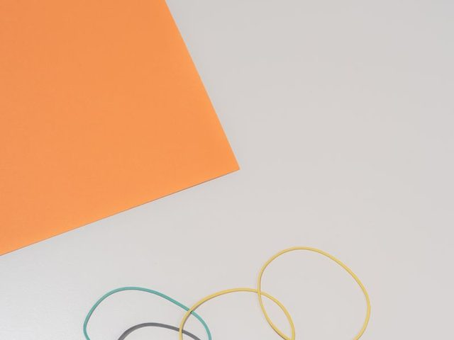

VOCABULARY · WORD UP 單字複習 UNIT 40
R-II．R 開頭（二）
WORD UP「R-II」的 31 個字（rice 到 Russian）。紅色＝要複習，藍色標籤＝WORD UP 標熟記、還要在這裡考對。
共 31 個單字．點 🔊 聽發音

1ricen.
米；飯
不可數；a bowl of rice
I eat a bowl of rice for lunch.我午餐吃一碗飯。

2richadj.
富有的；豐富的
be rich in 富含
Oranges are rich in vitamin C.柳橙富含維他命 C。

3ridev./n.
騎；搭乘
三態 ride-rode-ridden
I ride my bike to school.我騎腳踏車上學。

4rightadj./n./adv.
對的；右邊；權利
turn right 右轉；right now 馬上
Turn right at the bank.在銀行那裡右轉。

5ringn./v.
戒指；（鈴）響
三態 ring-rang-rung
The phone is ringing.電話在響。

6risev.
上升；升起
三態 rise-rose-risen
The sun rises in the east.太陽從東方升起。

7rivern.
河
We went fishing by the river.我們去河邊釣魚。

8roadn.
道路
Be careful when you cross the road.過馬路要小心。
9robv.
搶劫
rob + 人／地方 + of + 物；過去式 robbed
Two men robbed the bank.兩個男人搶了銀行。

10robotn.
機器人
This robot can clean the floor.這個機器人會掃地。

11rockn.
岩石；搖滾樂
He sat on a big rock.他坐在一塊大石頭上。

12rolen.
角色
play a role 扮演角色
She played the role of the queen.她演皇后的角色。

13rollv./n.
滾動；捲
The ball rolled down the hill.球滾下山坡。

14roofn.
屋頂
複數 roofs
There is a cat on the roof.屋頂上有一隻貓。

15roomn.
房間；空間
room 當空間不可數
Is there room for one more person?還有空間給多一個人嗎？

16rootn.
根
The tree has deep roots.這棵樹的根很深。

17ropen.
繩子
jump rope 跳繩
Let's jump rope.我們來跳繩吧。

18rosen.
玫瑰
He gave her a red rose.他送她一朵紅玫瑰。

19roundadj./prep.
圓的；環繞
all year round 一整年
The earth is round.地球是圓的。

20rown./v.
一排；划船
in a row 連續
We sat in the front row.我們坐在第一排。
21royaladj.
皇家的
They live in a royal palace.他們住在皇宮裡。

22rubv.
摩擦；揉
過去式 rubbed
Don't rub your eyes.不要揉眼睛。

23rubbern.
橡膠；橡皮擦
The ball is made of rubber.這顆球是橡膠做的。

24rudeadj.
無禮的
be rude to + 人
Don't be rude to your parents.不要對父母沒禮貌。
25ruinv./n.
毀壞；廢墟
The rain ruined our picnic.雨毀了我們的野餐。

26rulen.
規則
follow the rules 遵守規則
Follow the school rules.遵守校規。

27rulern.
尺；統治者
Draw a line with a ruler.用尺畫一條線。

28runv.
跑；經營
三態 run-ran-run
I ran to school this morning.我今天早上跑去學校。
29rushv./n.
衝；匆忙
rush hour 尖峰時間
The MRT is crowded during rush hour.尖峰時間捷運很擠。
30Russian.
俄羅斯
Russia is a very big country.俄羅斯是個很大的國家。
31Russianadj./n.
俄羅斯的；俄國人；俄文
He is learning Russian.他在學俄文。
FOCUS
重點整理
| 說法 | 中文 | 例子 |
|---|---|---|
| rise / raise | 升起（自己）／ 舉起（東西） | The sun rises. ／ Raise your hand. |
| be rich in | 富含… | rich in protein |
| play a role | 扮演角色 | play an important role |
| be rude to + 人 | 對某人無禮 | rude to the waiter |
| rush hour | 尖峰時間 | during rush hour |
| rule / ruler | 規則 ／ 尺、統治者 | break the rules ／ a ruler |
| in a row | 連續 | three days in a row |
ride-rode-ridden、ring-rang-rung、rise-rose-risen、run-ran-run。